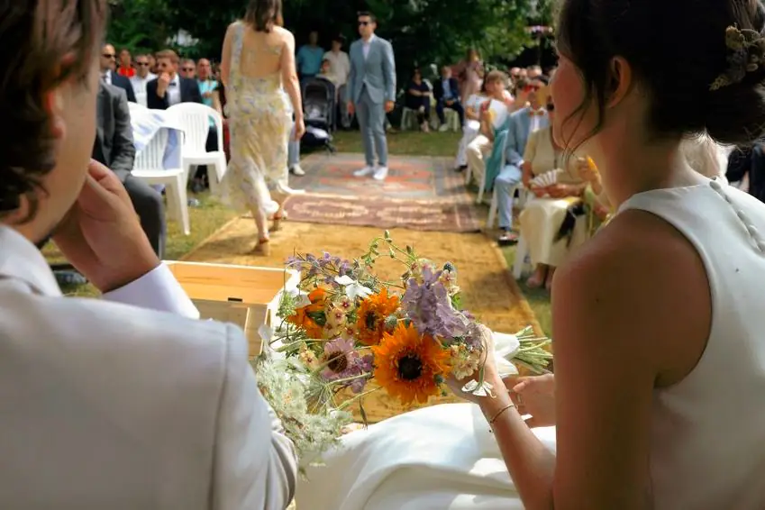
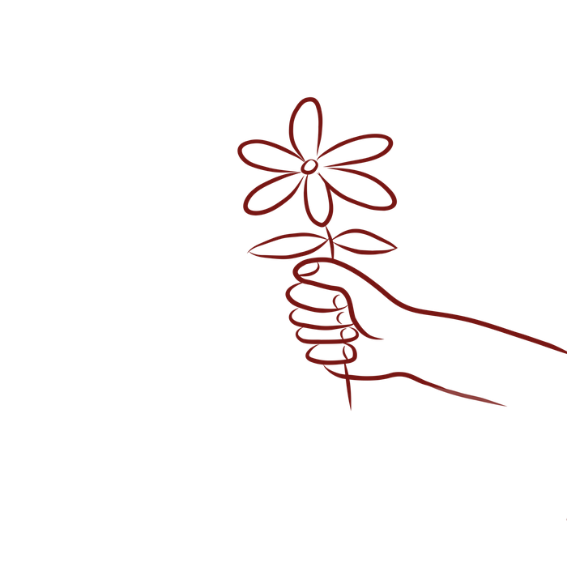
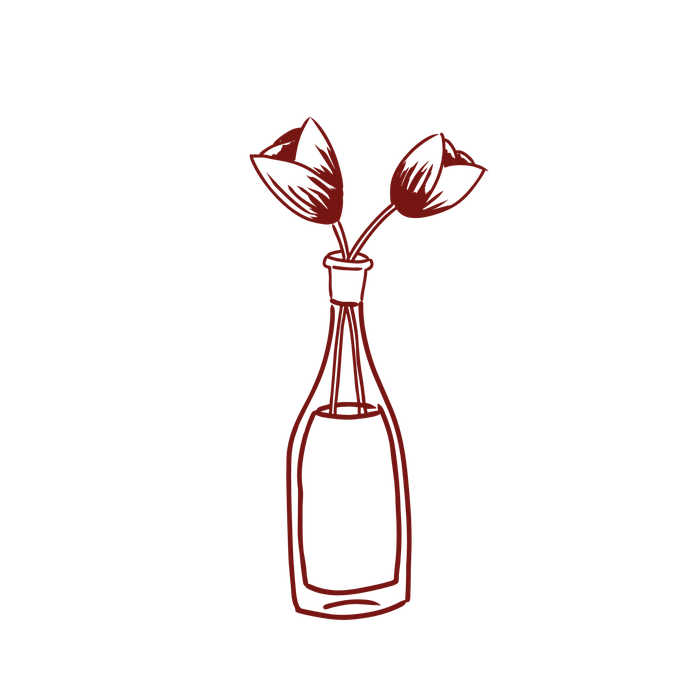

Un mariage, un anniversaire, un séminaire d'entreprise, une soirée entre amis ou tout autre moment à célébrer ? Chez Arrosé, fleuriste et caviste à Trébeurden, au cœur du Trégor, en Bretagne, on répond à toutes vos demandes d'événements, que ce soit en prestation florale ou en prestation vin. Tu veux voir ce qu'on a déjà réalisé ? C'est ici ↓
Que votre événement soit professionnel — séminaire, soirée d'entreprise, inauguration, salon — ou personnel — mariage, anniversaire, baptême, EVJF/EVG, fête de famille — on vous conseille avec plaisir et on adapte nos prestations à vos besoins, votre budget et l'ambiance que vous voulez donner à votre moment.
On se déplace dans tout le Trégor : Trébeurden, Lannion, Pleumeur-Bodou, Perros-Guirec, Trégastel, et au-delà, pour que votre événement porte la même touche bretonne que notre boutique.
Chaque événement est unique, c'est pourquoi on prend le temps d'échanger avec vous pour créer une prestation vin et fleurs qui vous ressemble : ambiance champêtre, chic, bohème, ou 100% bretonne, à vous de choisir !
Alors si vous avez un projet en tête ? Contactez-nous, on sera ravis d'en discuter avec vous !
Des fleurs pour chaque étape, du vin pour chaque table :
Arrosé accompagne les grands bonheurs et les jours plus silencieux.


Une dégustation privatisée et sur mesure, une commande pour un évènement, un partenariat…
On est curieux, discutons-en : Contact →